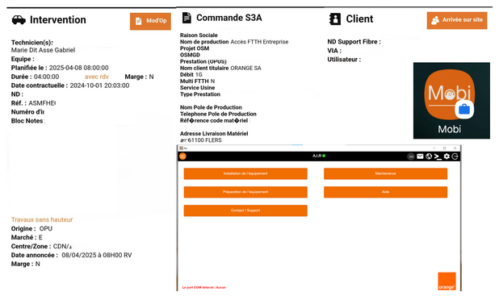
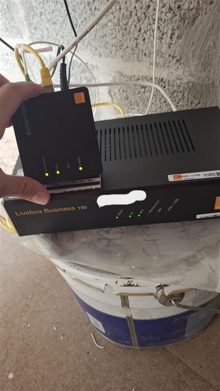

Mise en Service FTTH Entreprise - ASM FHE
Rôle : Technicien d'intervention FTTH (Alternant) | Lieu : Secteur de Flers | Période : 2024-2026
Contexte et Objectifs
L'intervention ASM FHE (Accès Service Mise en service - Fibre Haute Entreprise) représente la phase finale de mise en service de l'accès fibre pour les entreprises. Cette mission intervient généralement après le déploiement physique de la fibre (EPR SOU, tirage et soudures), mais il arrive que le technicien ASM FHE réalise également l'ensemble du déploiement physique : tirage de la fibre depuis le PBO, soudures optiques au Point de Branchement Optique, puis installation des équipements terminaux.
Note importante : Dans certaines interventions ASM FHE, le technicien doit effectuer le travail complet incluant l'EPR SOU (étude préalable), le tirage de la fibre optique dans les fourreaux, les soudures au PBO et côté client, avant de procéder à la mise en service. Cette polyvalence est essentielle pour optimiser les délais et garantir la qualité de bout en bout.
Cette page se concentre sur la phase de mise en service des équipements terminaux (PTO, ONT, routeur) et le provisioning automatique via l'application AIR.
Objectif principal : Installer et configurer les équipements terminaux, provisionner le routeur via l'application AIR, tester les performances et former le client à l'utilisation de sa nouvelle connexion fibre.
Déroulement de l'Intervention ASM FHE
Installation du PTO et Raccordement Optique
Installation physiqueAprès que la fibre ait été tirée et soudée (phase précédente), j'installe le Point de Terminaison Optique et réalise les raccordements finaux.
Installation du boîtier de terminaison optique au mur du local technique
Connexion de la fibre déployée dans le PTO
Raccordement du PTO à l'ONT via une jarretière optique
Contrôle de la présence du signal optique sur l'ONT
Installation et Raccordement du Routeur
Équipements actifsInstallation du routeur dans la baie informatique avec fixation rack si disponible
Connexion du routeur à l'ONT avec un câble RJ45
Branchement des alimentations pour ONT et routeur
Connexion du routeur au switch ou aux équipements réseau existants
Configuration et Provisioning Automatique
Mise en serviceUtilisation de l'application AIR pour configurer automatiquement le routeur avec les paramètres Orange entreprise.
Connexion à l'outil de provisioning automatique Orange sur tablette terrain
Identification automatique du routeur et récupération de sa configuration
Récupération des paramètres depuis les serveurs Orange (VLAN, QoS, sécurité)
Transfert automatique de la configuration complète vers l'équipement
Vérification de l'établissement de la liaison optique (état "O5" sur ONT)
Tests Fonctionnels et Validation des Performances
Recette techniqueRéalisation d'une batterie de tests pour valider le bon fonctionnement de l'accès fibre et la conformité aux performances contractuelles.
Appels entrants/sortants si ToIP incluse dans l'offre
Navigation web et accès aux services en ligne
Distribution DHCP et accès aux ressources (imprimantes, serveurs)
Speedtest pour vérifier les performances contractuelles
Vérification des temps de réponse (ping) vers les serveurs Orange
Validation du tunnel VPN pour interconnexion de sites
Contrôle de la priorisation du trafic voix/données
Formation Client et Clôture Administrative
LivraisonExplication de l'architecture installée (PTO, ONT, routeur)
Démonstration de l'interface d'administration du routeur
Communication des identifiants Wi-Fi, accès administration, contacts support
Validation de la conformité de l'installation par le client
Finalisation administrative de l'intervention dans l'application terrain
Récupération des emballages, déchets et remise en état des lieux
Difficultés Rencontrées et Solutions Apportées
Problème : Erreur lors du téléchargement de la configuration
Solution : Contact du support technique Orange pour resynchronisation manuelle
Problème : ONT ne détecte pas le signal optique
Solution : Vérification des jarretières et nettoyage des connecteurs optiques
Problème : Débit mesuré inférieur au contractuel
Solution : Diagnostic réseau client (équipement défaillant identifié)
Problème : Incompatibilité avec l'ancien réseau client
Solution : Reconfiguration du plan d'adressage en coordination avec le client
Analyse Réflexive
Cette mission de mise en service FTTH entreprise (ASM FHE) m'a permis de développer une expertise technique sur les équipements actifs et les protocoles de configuration automatique. J'ai acquis une maîtrise complète du provisioning via l'application AIR et des procédures de validation des installations professionnelles.
🔬 Sur le plan technique
- Maîtrise du provisioning automatique via AIR
- Compréhension des architectures PON et protocoles GPON
- Diagnostic réseau et tests de performance
- Configuration de routeurs professionnels
📋 Sur le plan organisationnel
- Rigueur dans les tests et la validation
- Méthodologie de dépannage structurée
- Autonomie dans la résolution d'incidents
- Gestion efficace du temps d'intervention
🤝 Sur le plan relationnel
- Pédagogie dans la formation client aux équipements
- Communication claire sur les performances attendues
- Gestion des réclamations et insatisfactions
- Coordination avec support technique distant
📈 Points d'amélioration identifiés
- Approfondir mes connaissances sur la configuration avancée des routeurs (VPN, QoS complexe)
- Développer mes compétences en diagnostic de performance réseau
- Renforcer ma compréhension des architectures PON de nouvelle génération (XGS-PON, 10G-EPON)
- Améliorer ma capacité à former les clients sur des sujets techniques complexes
Cette expérience confirme mon intérêt pour les métiers de technicien réseau et télécommunications, avec une orientation possible vers les fonctions de technicien support niveau 2, responsable d'exploitation fibre ou d'expert systèmes de transmission.
Traces et Preuves
Documentation technique disponible :
-
Fiche intervention ASM FHE complète avec signature client

-
Photos après installation complète (PTO, ONT, routeur en baie)
